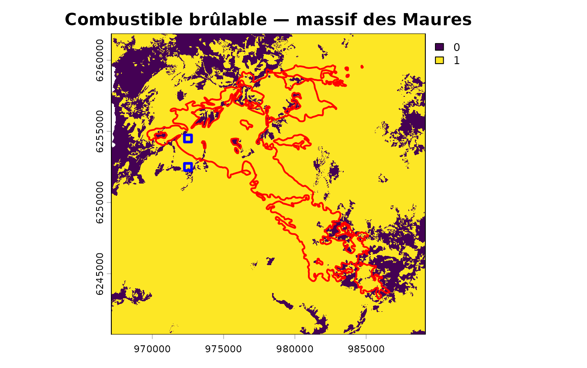
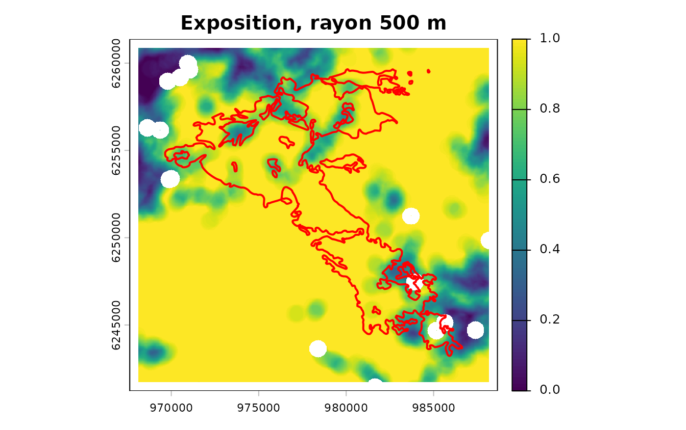
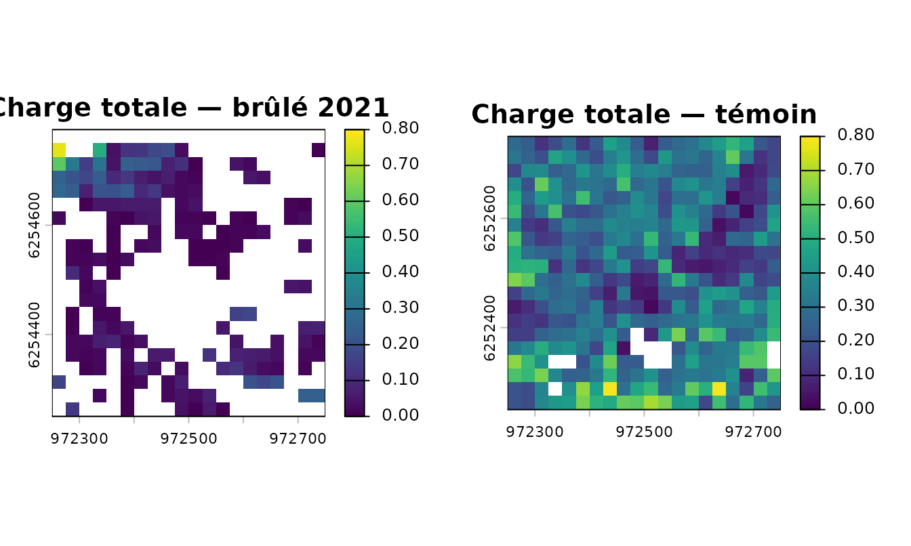
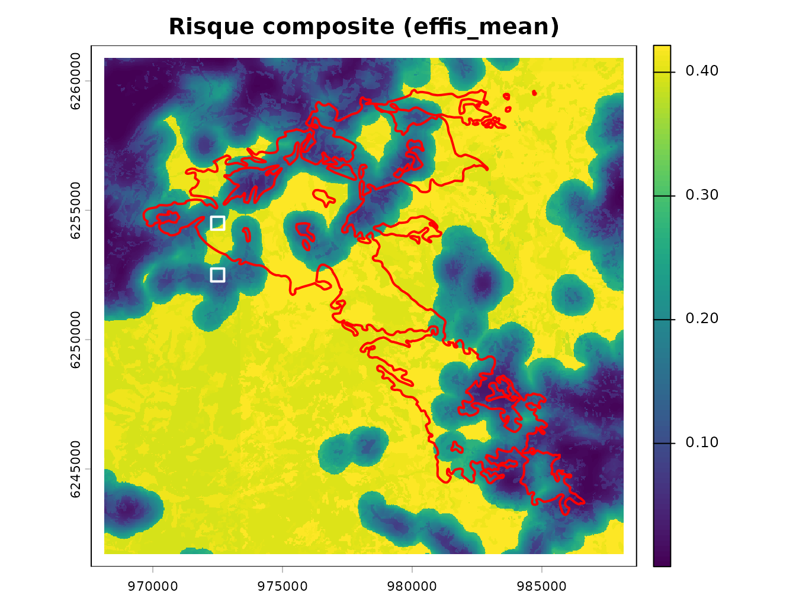
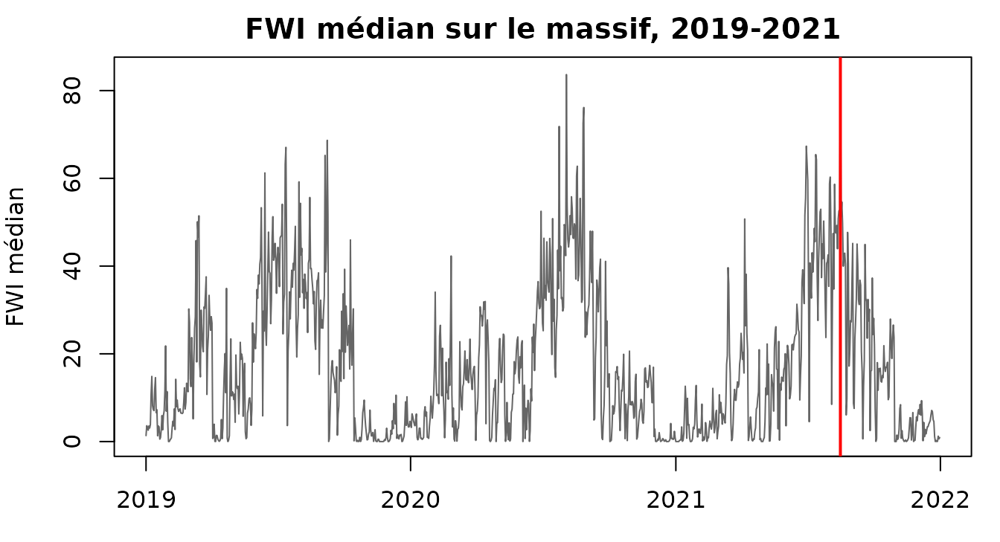

Les Maures : le LiDAR voit le sous-étage que la BD Forêt ignore
Source:vignettes/maures.Rmd
maures.RmdL’article Couchey fait tourner la chaîne là où le package est le moins à son aise : chênaie bourguignonne, vignes, aucune couverture LiDAR, et une validation qui échoue honnêtement. Celui-ci la fait tourner là où il a été conçu pour travailler — le massif des Maures — et montre les deux choses que Couchey ne pouvait pas montrer.
D’abord un vrai échantillon de feux, dont celui du Cannet-des-Maures du 16 août 2021, 6 510 hectares. Ensuite, et c’est l’objet de la page, du LiDAR HD sur toute l’emprise, ce qui rend enfin mesurable le sous-étage — l’angle mort que les deux vignettes désignent comme la faiblesse méthodologique numéro un de tout l’édifice.
Les données
gpkg <- system.file("extdata", "maures.gpkg", package = "firexpovulnR")
st_layers(gpkg)$name
#> [1] "study_area" "bdforet_v2" "clc_2018"
#> [4] "burnt_areas" "lidar_coverage" "lidar_squares"
#> [7] "millesime_candidates"
study <- st_read(gpkg, "study_area", quiet = TRUE)
bdforet <- st_read(gpkg, "bdforet_v2", quiet = TRUE)
corine <- st_read(gpkg, "clc_2018", quiet = TRUE)
feux <- st_read(gpkg, "burnt_areas", quiet = TRUE)
lidar_cov <- st_read(gpkg, "lidar_coverage", quiet = TRUE)
carres <- st_read(gpkg, "lidar_squares", quiet = TRUE)
c(km2 = round(as.numeric(st_area(study)) / 1e6),
bdforet = nrow(bdforet), corine = nrow(corine),
feux = nrow(feux), ha_brules = round(sum(feux$area_ha)))
#> km2 bdforet corine feux ha_brules
#> 423 2333 201 11 6927Constitué le 2026-08-17 par
data-raw/build_maures_extract.R. L’emprise est cadrée sur
le feu de 2021 tamponné de 2 km, ce qui donne un échantillon de feux
plutôt qu’un rectangle arbitraire.
Le combustible méditerranéen, enfin
sort(table(bdforet$code_tfv), decreasing = TRUE)[1:6]
#>
#> LA4 FO1 FF31 FF2-51-51 FF32 FF1G06-06
#> 359 349 275 210 207 170LA4 en tête — la lande, c’est-à-dire
maquis et garrigue. Puis forêt ouverte de feuillus, mélanges,
pin maritime (FF2-51-51), chêne
vert (FF1G06-06). À Couchey la classe dominante
était le mélange de feuillus de plaine et il n’y avait pas une seule
lande.
C’est ici que les valeurs par défaut du package sont le plus près de leur base de preuves : le maquis reçoit le poids 1,00, le conifère fermé 0,95, et les rayons d’exposition ont au moins une validation méditerranéenne derrière eux.
mil <- st_drop_geometry(st_read(gpkg, "millesime_candidates", quiet = TRUE))
mil[, c("dep", "year", "pct_area")]
#> dep year pct_area
#> 1 83 2008 48.4
#> 2 83 2014 51.6
primaire <- fev_fuel_source(bdforet, type = "bdforet_v2", res = 25,
aoi = study, millesime = min(mil$year))
auxiliaire <- fev_fuel_source(corine, type = "clc_2018", res = 25,
aoi = study, millesime = 2018)
fuel <- fev_fuel_merge(primaire, auxiliaire)
#> "clc_2018" filled 128472 cells (19%) that
#> "bdforet_v2" left unmapped.
fuel <- fev_fuel_fill_gaps(fuel)
#> 18 empty cells in 16 gaps.
#> ✔ 18 filled: below 25 ha, so no component could have mapped them.
#> ℹ Largest gap: 0.12 ha.
#> ℹ Class from the modal 3x3 neighbour; the source layer records them as
#> "gap_filled" rather than claiming a dataset mapped them.La seconde ligne répare 18 cellules non cartographiées — des
esquilles de rastérisation sur les liserés entre polygones CORINE. C’est
expliqué en détail dans l’article Couchey ;
l’essentiel est que fev_exposure() propage tout vide à
travers sa fenêtre, donc une cellule isolée en efface un disque de 500 m
de rayon.
Deux campagnes BD ORTHO, 2008 et 2014. Retenez ce chiffre : le grand feu est de 2021.
brulable <- fev_fuel_binary(fuel)
round(100 * terra::global(fev_data(brulable), "mean", na.rm = TRUE)[[1]], 1)
#> [1] 85.1
par(mar = c(2, 2, 2, 4))
plot(fev_data(brulable), main = "Combustible brûlable — massif des Maures")
plot(st_geometry(feux), add = TRUE, border = "red", lwd = 2)
plot(st_geometry(carres), add = TRUE, border = "blue", lwd = 3)
Traits rouges, les onze incendies. Carrés bleus, les deux emplacements dont il sera question en section 4.
Exposition
expo <- fev_exposure(brulable, radius = 500, type = "ember", quiet = TRUE)
terra::global(fev_data(expo), c("mean", "max"), na.rm = TRUE)
#> mean max
#> exposure 0.8645515 1
par(mar = c(2, 2, 2, 4))
plot(fev_data(expo), main = "Exposition, rayon 500 m")
plot(st_geometry(feux), add = TRUE, border = "red", lwd = 2)
LiDAR HD : couvert, contrairement à Couchey
st_drop_geometry(lidar_cov)
#> n_tiles chantiers timestamp
#> 1 505 106, 117 2025-05-01
round(100 * as.numeric(st_area(lidar_cov)) / as.numeric(st_area(study)), 1)
#> [1] 119.5505 dalles, deux blocs d’acquisition, survol de 2025. Le contrôle de disponibilité que le brief impose avant tout téléchargement répond ici oui, là où il répondait non sur Couchey :
fev_lidarhd_available(study)
#> 505 LiDAR HD points tiles found.
#> i They cover 100% of the area.
#> i 2 acquisition blocks: "106", "117".
#> i 1 vintage: "2025".Les dalles font 1 km de côté, en COPC — lisible par plage HTTP, donc sans téléchargement quand quelques hectares suffisent. Mesuré : entre 120 et 260 Mo la dalle, pas le gigaoctet qu’une première rédaction annonçait.
La démonstration : deux endroits que la BD Forêt ne distingue pas
C’est le cœur de cette page. Deux carrés de 500 m, l’un dans le périmètre brûlé de 2021, l’autre 2 km plus loin hors du feu, choisis pour que la BD Forêt leur donne la même classe.
st_drop_geometry(carres)[, c("role", "tfv_dominant", "pulses_per_m2",
"points_per_m2")]
#> role tfv_dominant pulses_per_m2 points_per_m2
#> 1 burnt FF1-00-00 24.28 25.77
#> 2 control FF1-00-00 25.59 31.87Même classe dominante — FF1-00-00, forêt fermée à
mélange de feuillus. Donc, pour tout ce que la couche catégorielle sait
exprimer, ces deux endroits sont identiques :
lk <- fev_fuel_lookup("bdforet_v2")
w <- fev_fuel_weights(quiet = TRUE)
ligne <- lk[lk$code == "FF1-00-00", c("code", "label", "fuel_type", "burnable")]
ligne
#> code label fuel_type burnable
#> 9 FF1-00-00 Forêt fermée à mélange de feuillus broadleaf_closed TRUE
w[[ligne$fuel_type]]
#> [1] 0.6Même code, même type de combustible, même poids de disponibilité, même valeur dans le masque brûlable. Un pare-feu placé sur cette carte les traiterait de la même façon.
Voici ce que le LiDAR mesure :
brule <- rast(system.file("extdata", "lidar_burnt.tif",
package = "firexpovulnR"))
temoin <- rast(system.file("extdata", "lidar_control.tif",
package = "firexpovulnR"))
vb <- terra::global(brule, "mean", na.rm = TRUE)[, 1]
vt <- terra::global(temoin, "mean", na.rm = TRUE)[, 1]
data.frame(
metrique = names(brule),
brule = round(vb, 3),
temoin = round(vt, 3),
rapport = round(ifelse(vb > 0, vt / vb, NA), 1)
)
#> metrique brule temoin rapport
#> 1 Height 9.723 10.142 1.0
#> 2 CBH 0.849 1.575 1.9
#> 3 FSG 0.766 1.102 1.4
#> 4 H_Bush 0.863 4.440 5.1
#> 5 CBD_max 0.034 0.155 4.5
#> 6 CFL 0.076 0.283 3.7
#> 7 TFL 0.081 0.312 3.8
#> 8 MFL 0.051 0.227 4.5
#> 9 FL_0_1 0.032 0.147 4.5
#> 10 FL_1_3 0.015 0.103 6.7
#> 11 GSFL 0.011 0.023 2.1
#> 12 Cover 0.102 0.297 2.9
#> 13 PAI_tot 0.424 1.640 3.9Lisez la colonne rapport de haut en bas.
Height vaut 1,0 : les deux endroits ont la
même hauteur de canopée, 9,7 et 10,1 m. Un modèle numérique de hauteur,
un CHM, dirait donc lui aussi qu’ils se ressemblent.
Puis tout le reste s’écarte, et ce qui s’écarte le plus est ce qui est bas :
| Métrique | Ce que c’est | Rapport |
|---|---|---|
FL_1_3 |
charge entre 1 et 3 m | 6,7 |
H_Bush |
sommet de la strate arbustive | 5,1 |
MFL |
charge de sous-étage | 4,5 |
FL_0_1 |
charge sous 1 m | 4,5 |
CBD_max |
densité apparente maximale | 4,5 |
TFL |
charge totale | 3,8 |
La charge de combustible totale passe de 0,081 à 0,312 kg/m². Quatre ans après le feu, le carré brûlé a reconstitué une canopée de hauteur comparable mais ne porte encore qu’un quart du combustible, et l’écart est concentré dans la strate basse — celle où un feu de surface se propage.
par(mfrow = c(1, 2), mar = c(2, 2, 3, 4))
plot(brule[["TFL"]], main = "Charge totale — brûlé 2021",
range = c(0, 0.8))
plot(temoin[["TFL"]], main = "Charge totale — témoin",
range = c(0, 0.8))
Pourquoi la couche catégorielle ne pouvait pas le savoir
Trois raisons qui se cumulent, et aucune n’est un défaut de la BD Forêt.
Son millésime est 2008 ou 2014, et le feu est de 2021. Dans le carré brûlé, elle décrit le peuplement d’avant.
Sa nomenclature ne contient pas le sous-étage. Même
à jour, FF1-00-00 resterait FF1-00-00 : le
poste décrit la strate arborée et l’essence dominante, pas ce qui pousse
dessous.
Et la hauteur de canopée n’aurait pas suffi. C’est
le résultat le plus utile de cette comparaison : Height est
identique. Un CHM issu d’ortho ou de satellite — la solution qu’on
propose souvent pour rafraîchir un inventaire — aurait conclu que ces
deux endroits se valent.
Mettre un chiffre dessus
L’argument tient sur deux carrés. fev_fuel_profile() le
généralise : il confronte chaque classe de la couche catégorielle aux
métriques que le LiDAR a mesurées, et rapporte la part de variance que
l’appartenance de classe explique.
lidar_deux <- merge(brule, temoin)
zone <- st_union(st_buffer(carres, 25))
p_prim <- fev_fuel_source(bdforet, type = "bdforet_v2", res = 25,
aoi = zone, millesime = min(mil$year))
p_aux <- fev_fuel_source(corine, type = "clc_2018", res = 25,
aoi = zone, millesime = 2018)
profil <- fev_fuel_profile(fev_fuel_merge(p_prim, p_aux), lidar_deux,
quiet = TRUE)
#> "clc_2018" filled 100 cells (4.2%) that
#> "bdforet_v2" left unmapped.
profil$explained
#> metric n n_classes explained
#> 1 H_Bush 566 9 0.17459515
#> 2 FL_0_1 566 9 0.16503238
#> 3 FL_1_3 566 9 0.08356245
#> 4 Cover 566 9 0.42623555
#> 5 PAI_tot 566 9 0.14757963Le résultat est l’argument de cette page, réduit à cinq nombres :
| Métrique | Ce qu’elle décrit | Variance expliquée |
|---|---|---|
Cover |
couvert de houppier | 42,6 % |
H_Bush |
hauteur de la strate arbustive | 17,5 % |
FL_0_1 |
charge sous 1 m | 16,5 % |
PAI_tot |
indice de surface végétale | 14,8 % |
FL_1_3 |
charge 1-3 m | 8,4 % |
La classification restitue ce que ses sources enregistrent — le couvert de houppier, à 42,6 % — et laisse la charge de la strate 1-3 m indéterminée à 92 %. Or c’est cette strate-là qui porte le feu de surface.
Ce n’est pas une critique de la BD Forêt : elle fait ce pour quoi elle est faite. C’est la mesure du prix à payer quand on s’en sert seule pour du combustible, et la raison pour laquelle le registre continu existe.
Neuf classes, 566 cellules, deux placettes d’un seul massif : un ordre de grandeur et une méthode, pas une validation générale.
Greffe sur le registre catégoriel
lidar_src <- fev_fuel_source(temoin, type = "custom", register = "continuous",
units = c(TFL = "kg/m2"))
#> Warning: `units` does not cover every continuous layer.
#> ℹ Missing for "Height", "CBH", "FSG", "H_Bush", "CBD_max", "CFL", "MFL",
#> "FL_0_1", "FL_1_3", "GSFL", "Cover", and "PAI_tot". An unlabelled metric is
#> not reproducible.En pratique on emploierait fev_fuel_lidar() sur la dalle
elle-même ; ici la sortie est relue depuis l’extrait, faute d’embarquer
200 Mo de nuage de points.
fuel_lidar <- fev_fuel_lidar("LHD_FXX_0972_6253_PTS_LAMB93_IGN69.copc.laz",
res = 25, millesime = 2025)
complet <- fev_fuel_attach(fuel, fuel_lidar)
fev_fuel_registers(complet)
#> [1] "categorical" "continuous"fev_fuel_attach() n’est pas
fev_fuel_merge(). La fusion arbitre entre sources qui se
disputent le même pixel ; le LiDAR ne dispute rien, il apporte des
grandeurs que ni CORINE ni la BD Forêt ne portent. La fonction rapporte
la part de cellules catégorielles effectivement couverte, parce que le
programme est en cours et que les deux registres décrivent des
sous-ensembles différents de la carte.
Validation
d <- st_drop_geometry(feux)
d[order(-d$area_ha), c("fire_date", "area_ha", "COMMUNE", "PERCNA2K")][1:6, ]
#> fire_date area_ha COMMUNE PERCNA2K
#> 1 2021-08-16 6510 Cannet-des-Maures 61.070134045748695
#> 4 2024-06-11 273 Vidauban 56.2797473123125
#> 2 2021-08-16 116 Garde-Freinet 0.906368344753725
#> 5 2024-06-12 8 Garde-Freinet 0
#> 8 2024-06-11 7 Garde-Freinet 0
#> 3 2021-08-17 5 Garde-Freinet 77.95814762665916Onze incendies, dont le 6 510 ha de 2021 — un échantillon, cette fois, là où Couchey n’en avait qu’un.
La météo, réelle et sans jeton
Trois ans de FWI calculés sur l’archive Open-Meteo, qui re-sert ERA5 sans authentification. Aucune clé n’a été lue pour produire ce tableau.
meteo_tab <- read.csv(gzfile(system.file("extdata", "maures_weather.csv.gz",
package = "firexpovulnR")))
jour <- meteo_tab[meteo_tab$yr == 2021 & meteo_tab$mon == 8 &
meteo_tab$day == 16, ]
round(sapply(jour[, c("temp", "rh", "ws", "prec")], mean), 1)
#> temp rh ws prec
#> 35.1 22.3 23.6 0.0Trente-cinq degrés, 22 % d’humidité relative, 24 km/h de vent et pas une goutte sur les vingt-quatre heures précédentes, le jour où 6 510 hectares ont brûlé.
meteo <- fev_data(fev_fwi_from_weather(meteo_tab, index = "FWI",
crs_work = 2154))
danger_pct <- fev_fwi_percentile(meteo, ref_period = c(2019, 2021))
dernier <- fev_data(danger_pct)[[terra::nlyr(fev_data(danger_pct))]]
dispo <- fev_fuel_availability(fuel, weights = fev_fuel_weights(quiet = TRUE))
pile <- fev_align(danger = dernier, disponibilite = fev_data(dispo),
exposition = fev_data(expo))
danger <- fev_danger_index(pile$danger, pile$disponibilite,
normalise = "percentile")
vuln <- fev_vuln_layer(pile$exposition, method = "percentile_rank",
name = "expo")
risque <- fev_risk(danger, vuln, normalise = "none")
par(mar = c(2, 2, 2, 4))
plot(fev_data(risque), main = "Risque composite (effis_mean)")
plot(st_geometry(feux), add = TRUE, border = "red", lwd = 2)
plot(st_geometry(carres), add = TRUE, border = "white", lwd = 2)
Le jaune est le maquis continu, les taches sombres les trouées — le risque moyen y vaut 0,32 sur combustible brûlable contre 0,05 en dehors, un facteur 6,5. Les périmètres rouges sont les onze incendies, les deux carrés blancs les placettes LiDAR.
Le cadre blanc de 500 m sur le pourtour est un effet de bord réel,
non un artefact : la fenêtre focale y déborde de l’emprise, et il n’y a
effectivement pas de donnée au-delà. Il est préférable au remède
apparent na_rm = TRUE, qui calculerait des fenêtres
tronquées — mesuré sur ces données, une exposition moyenne de 0,32 dans
le cadre contre 0,46 à l’intérieur, soit 30 % de sous-estimation
invisible. Le trou blanc est plus honnête que ce chiffre-là.
Pour le supprimer sans rien inventer, il faut récupérer le combustible sur l’emprise tamponnée du rayon d’exposition, puis recadrer après le calcul focal.
Le jour de l’incendie sort premier de 1 096
C’est la vérification que Couchey ne pouvait pas offrir avec un seul feu, et que ni l’une ni l’autre ne pouvait offrir avec une série inventée :
med <- terra::global(meteo, stats::median, na.rm = TRUE)[, 1]
dates <- as.Date(terra::time(meteo))
data.frame(date = dates[order(-med)][1:3],
fwi_median = round(sort(med, decreasing = TRUE)[1:3], 1))
#> date fwi_median
#> 1 2021-08-16 84.3
#> 2 2020-08-03 83.6
#> 3 2020-08-27 76.1Le 16 août 2021 est le premier jour sur 1 096. Aucune donnée de feu n’entre dans le calcul : le FWI ne connaît que la température, l’humidité, le vent et la pluie servis par la réanalyse.
par(mar = c(3, 4, 2, 1))
plot(dates, med, type = "l", col = "grey40", xlab = "", ylab = "FWI médian",
main = "FWI médian sur le massif, 2019-2021")
abline(v = as.Date("2021-08-16"), col = "red", lwd = 2)
Deux pièges mesurés en construisant ce tableau
Le premier est une question d’unité déguisée en question de temps. La pluie n’est pas une observation de midi comme les trois autres variables : le système canadien prend le cumul des vingt-quatre heures qui précèdent. Lire la pluie de l’heure de midi jette 23 heures par jour, et la conséquence est mesurable ici — 10 % de jours de pluie au lieu de 39 %, et un DC de 1 949 le 16 août au lieu de 619.
Le second est ce qui rend le premier difficile à voir. Le facteur de durée du FWI sature :
fD <- function(bui) 1000 / (25 + 108.64 * exp(-0.023 * bui))
round(sapply(c(BUI_150 = 150, BUI_200 = 200, BUI_300 = 300, BUI_600 = 600), fD), 2)
#> BUI_150 BUI_200 BUI_300 BUI_600
#> 35.15 38.33 39.83 40.00L’asymptote est 40. Au-delà d’un BUI de 250 environ, le FWI est
presque aveugle à la sécheresse supplémentaire : un DC dérivé au double
de sa valeur physique ne fait pas paraître le FWI faux.
Il faut regarder le DC et le BUI directement, ce que
fev_fwi_from_weather(index = "DC") permet.
sapply(c("DMC", "DC", "BUI"), function(ix) {
r <- fev_data(fev_fwi_from_weather(meteo_tab, index = ix, crs_work = 2154))
round(median(terra::values(r[[which(dates == as.Date("2021-08-16"))]]),
na.rm = TRUE))
})
#> Warning in cffdrs::fwi(weather, init = init_df, lat.adjust = lat_adjust, : Same
#> initial data were used for multiple weather stations
#> Warning in cffdrs::fwi(weather, init = init_df, lat.adjust = lat_adjust, : Same
#> initial data were used for multiple weather stations
#> Warning in cffdrs::fwi(weather, init = init_df, lat.adjust = lat_adjust, : Same
#> initial data were used for multiple weather stations
#> DMC DC BUI
#> 155 643 199Un DC de l’ordre de 600 en août dans les Maures est une sécheresse profonde et plausible. C’est ce qu’on veut lire : une valeur qu’on peut confronter à la littérature, pas un nombre qui a seulement l’air grand.
val <- fev_validate(risque, feux, millesime = min(mil$year))
val$temporal$table
#> lag_years n_fires area_ha pct_area
#> 1 <= 0 (fire before the vintage) 0 0 0
#> 2 1 to 5 0 0 0
#> 3 > 5 11 6927 100
val$auc
#> [1] 0.5345634
val$classes[, c("class", "pct_of_area", "pct_of_burnt", "ratio")]
#> class pct_of_area pct_of_burnt ratio
#> 1 0 - 0.2 31.94 28.55 0.89
#> 2 0.2 - 0.4 23.89 27.14 1.14
#> 3 0.4 - 0.6 44.17 44.31 1.00
#> 4 0.6 - 0.8 0.00 0.00 NaN
#> 5 0.8 - 1 0.00 0.00 NaNLe biais temporel est le même qu’à Couchey, et pour la même raison : le combustible est de 2008, les feux vont de 2017 à 2026. Onze incendies valent mieux qu’un, mais ils ont tous brûlé au moins neuf ans après la photographie aérienne qui fonde la couche — 100 % de la surface brûlée, comme le dit le tableau.
Et cette fois l’AUC est calculable, sur une météo réelle et un échantillon de 109 000 cellules brûlées. Il vaut 0,53. Les ratios par classe le disent plus crûment : 0,93, 1,05, 1,00 — la carte ne distingue pas ce qui a brûlé de ce qui n’a pas brûlé.
C’est le résultat, et il faut le lire pour ce qu’il est. Ce n’est pas un échec de la météo, qui place le jour du feu premier sur 1 096. C’est ce qui arrive quand on module un danger météorologique juste par une couche de combustible qui a treize ans de retard sur l’événement : le terme spatial du produit est faux là où il compte, et le terme temporel ne peut pas le sauver. Les Maures, avec onze feux et une couverture LiDAR complète, ne rattrapent pas Couchey sur ce point — elles le documentent mieux.
Ce que cette page ajoute à Couchey
| Couchey | Les Maures | |
|---|---|---|
| Combustible dominant | mélange de feuillus, vignes | maquis, pin maritime, chêne vert |
| Poids par défaut | mal à l’aise (0,60) | proches de leur base de preuves |
| LiDAR HD | 0 dalle | 505 dalles, 100 % |
| Échantillon de feux | 1 feu, 26 ha | 11 feux, 6 927 ha |
| Millésime | 2007 / 2010 / 2014 | 2008 / 2014 |
| Validation | impossible, et c’est le résultat | possible : AUC 0,53, soit le hasard |
| Jour du feu dans le FWI | 2e sur 960 jours | 1er sur 1 096 jours |
Et une chose que ni l’une ni l’autre ne résout : le LiDAR HD est de
2025, la BD Forêt de 2008. Le registre continu et le
registre catégoriel d’un même objet fev_fuel_source peuvent
donc décrire le même sol à dix-sept ans d’écart. Le package les tient
séparés et journalise les deux millésimes plutôt que de les mélanger —
c’est tout ce qu’il peut faire, et c’est mieux que de laisser croire
qu’il s’agit d’une seule description.
Enfin, une réserve sur les chiffres de la section 4. Ils viennent de deux carrés de 25 hectares. Ils illustrent un mécanisme — la strate basse porte l’écart que la classe ne voit pas — ils ne mesurent pas l’effet d’un incendie sur un massif. Pour cela il faudrait les 505 dalles, ce qui est un travail de calcul, pas de démonstration.